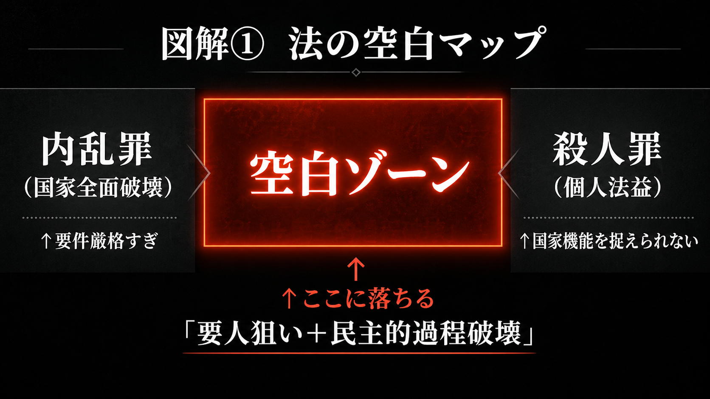
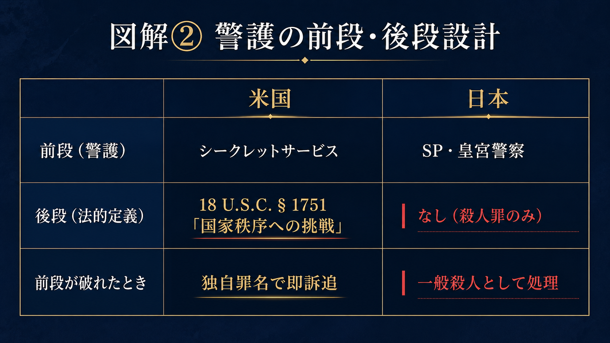

2026年4月25日夜、ワシントンＤ．Ｃ．のホワイトハウス特派員夕食会会場で、コール・トマス・アレン容疑者（31）がトランプ大統領を狙い、銃を手にした。逮捕からわずか2日後、連邦検察は大統領や副大統領、大統領スタッフの暗殺、誘拐、暴行を禁じる連邦法「18 U.S.C. § 1751」（大統領暗殺罪）を根拠に訴追を決めた。これは単なる個人への暴力として扱われたのではない。国家秩序そのものへの直接的挑戦として、司法が即座に反応したのである。
この法律の来歴は重い。大統領暗殺罪は1965年に制定された。前年のケネディ暗殺が、連邦国家アメリカに不都合な真実を突きつけたからである。当時、大統領暗殺を独立して裁く連邦法は存在せず、州法の殺人罪で対応せざるを得なかった。国家元首を奪われた国が、法の入口で管轄の迷路に立ち尽くしたのである。この欠陥を直視し、大統領の安全を連邦の「優越的利益」として定義したのが同法であった。
重要なのは、ここで守られているものが単なる「偉い人物の生命」ではないという点である。大統領という個人を神聖化するためではない。民主国家の意思決定を担う機関が、暴力によって奪われることを防ぐためである。誰を傷つけたかではない。国家の何を壊そうとしたか。その問いを、アメリカの法は正面から引き受けている。
では、日本はどこに立っているのか
2022年7月、安倍晋三元首相は選挙演説中に銃撃され、命を奪われた。だが、あの事件は基本的に殺人罪として処理された。首相経験者への攻撃を、国家機能または民主主義過程への攻撃として独自に捉える罪種は、今日なお存在しない。
誤解のないよう言っておく必要がある。日本が手をこまぬいてきたわけではない。皇族の安全は皇宮警察が24時間体制で担い、首相・閣僚にはSP（セキュリティポリス）が張り付く。重要土地利用規制法は首相官邸や皇居周辺における特定の行為を制限し、ドローン規制は国会議事堂上空を飛行禁止にしている。日本の選択は「重罰で威嚇する」のではなく、「徹底した警護と接近制限で未然に防ぐ」というものだった。
だが、2022年7月の選挙演説場にSPはいた。それでも元首相は撃たれた。
「守る仕組み」が破れたとき、法には何が残るか。殺人罪だけである。攻撃が「民主的手続きへの挑戦」だったことを、法は何も言わない。警護は前段の設計だ。前段が突破されたとき、後段である『国家がその行為を何と名指すか』が問われる。日本の法には、その言葉がない。

なぜ埋まらないのか
もちろん、人の生命に軽重はない。権力者の命だけを特別扱いする発想には、戦前の個人崇拝を連想させる危うさがある。この反論には正当さがある。戦後憲法の秩序は、国家が個人を呑み込んだ時代への痛烈な反省の上に築かれた。権力者を法の上に置いてはならない。これは立憲主義の根幹である。
だが、ここで思考を止めてはならない。政治指導者への攻撃を特別に捉えることは、権力者個人を尊ぶことではない。選挙、議会、内閣、司法という民主的手続きの連続性を守ることである。演説中の政治家に向けられた銃弾は、1人の身体を撃つにとどまらない。有権者の判断を恐怖で歪め、政治参加の空間を萎縮させ、民主主義を銃声の下に屈服させる。法がそこを見落とすなら、国家は民主主義を理念として語りながら、実体として守ることを怠っていることになる。
日本の刑法には、この中間領域を捕捉する独立した罪種が乏しい。内乱罪は国家機構の全面的破壊を前提とし、現実にはほとんど動かない。殺人罪は個人の生命を法益とし、国家機能の麻痺や民主的過程の破壊という次元を十分に表現できない。その狭間に、特定の要人を狙うことで国家の意思決定を揺さぶる行為が落ちている。これは技術的欠缺ではない。国家が自らの中枢をどう理解しているかという、思想の欠缺である。

処方箋は明瞭である
第1に、選挙活動や公的政治集会における暴力を加重処罰する「民主主義過程防衛罪」を設けるべきである。対象を人物の序列ではなく、政治参加の場と行為に置く。これにより、権力者特権ではなく、主権者の判断空間を守る制度となる。
第2に、内閣・国会・裁判所など憲法機関の意思決定を暴力や威迫で著しく阻害する行為を捕捉する「憲法機関機能妨害罪」を検討すべきである。共謀や未遂段階から捕捉できる構造を持たせる一方、構成要件は物理的暴力と具体的威迫に厳格に限定する。正当な批判、抗議、言論活動は明確に除外する。国家の安全と市民的自由は、粗雑な二者択一ではない。
沈黙は中立ではない。法の沈黙は、やがて敵対者にとっての招待状となる。警護は前段に過ぎない。前段が破られたとき、国家は何を言うか。何を守り、何を許さないか。その線を引けない国家は、線を引かないという形で、すでに答えを出しているのである。